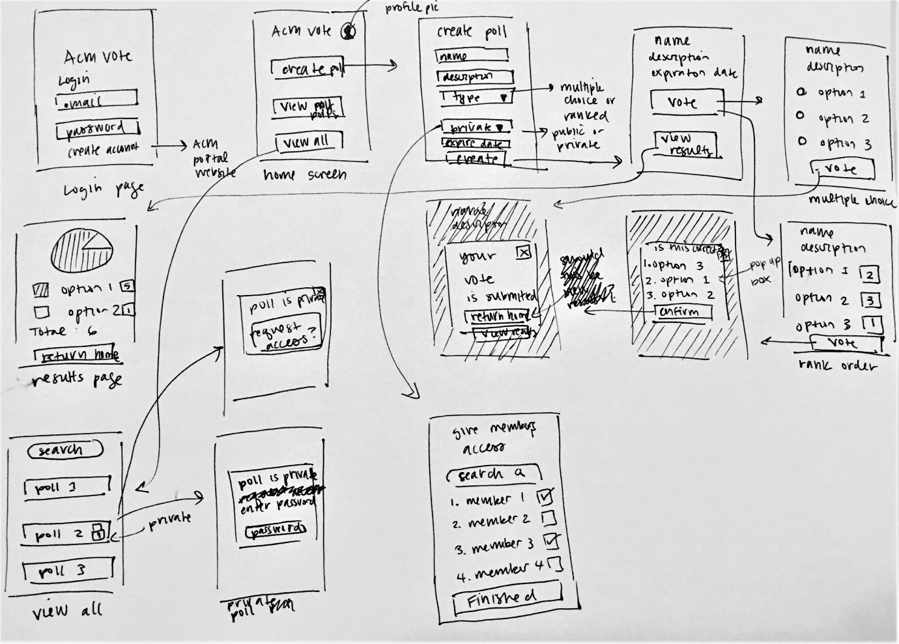

Note: It is not completed yet, and there will be updates later.
Date: July 2020 to September 2020
Role: UI/UX Designer
Teammates:Product Manager: Matei-Alexandru Gardus
Mentor: Paul Pan
Lead Designer/UX Researcher: Michele Murakami
Front-End Developers: Maggie Mao and Dhruv Sood
Back-End Developer: Michael Shao
Tools: Figma
ACM UC San Diego is UCSD's largest code and design student organization. The organization has grown pretty quickly, and there is an increase in the number of board positions. Thus, it create the challenge in managing board elections, and keeping track of the vote counts.
In order to improve the process of ACM board elections, we created an application that users would be able to create polls, vote, and keep track of the votes from ACM members.
Michele, who was a Lead Designer and UX Researcher, began the research by searching voting software and polling websites in general for inspiration. Moreover, she collected information from current ACM board members, who would use the application.
From her research, we got the main issues including:
1. It was inconvenient to count the votes manually.
2. It was challenging to check who had not yet voted in order to remind them.
3. By counting manually, it was easy to make mistakes, and get the wrong results.
With the information from the initial research, and discussing with other teammates about the app and its features, Michele made a sketch of the app's layout and flow, in order to have a general idea about how it works.
We conducted interviews over Zoom (which took about 25 to 30 minutes for each interview).
During the interviews, users tested our Figma prototype.
Then, they gave us feedbacks, and suggestions about what we should change or improve on the prototype.
(Will update other details later)
Will update later
Will update later